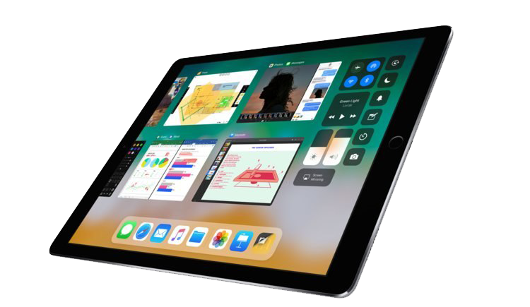

Découvrez le tout nouveau piTab de la marque PineApple !!!
Cette tablette tactile est la plus compact et puissante de toute grâce à son système piOS AK42 de bien sûr 4.2Ghz (la pouissance est présente pour faire tourner fortnite sur tablette)aussi équipé sur le piPhone et il vient s'accompagner d'une mémoire vive de 16Go et aussi vous permettra de prendre des photos à plus de 2km grâce à son seul objectif frontal téléscopique de 64Gpx (Apple a de quoi trembler avec ses 3 petits appareils) et ses deux objectifs (frontal et facial) vous permettent de prendre des photos sur 360° (et des vidéos mais ça paraît tellement évident...)!!!
Vous pourrez facilement écouter les commentaires de omar de BeIn , et jouer avec votre nouveau drone sur votre piWatch .
Avec son écran de 46" de diagonale pour les plus petits modèles et 115" pour les plus grands ,avec une résolution en 6k en 4320 FullHD et incurvé (comme tout les autres modèle de la marque), vous pourrez regarder vos mails sans trop de problèmes (normalement).
Mais vous me parlerez de la batterie qui ne peut pas tenir une journée,je vous répondrai que vous n'avez pas tort, elle ne tient pas une journée mais une semaine (oui oui!!) et se recharge quand vous l'avez dans votre poche grâce à un système très complexe de balance synusoïdale de centrifuge(je ne comprends pas ce que j'écris mais c'est juste quand vous marchez que cela ce recharge en fait, voilà tout)
Ah oui j'allais oublier, il se recharge sans fil
Une fois ceci dit vous me direz que vous trouvé que la 4G est trop lente, je vous affirmerais que nous avons créé un réseau privé spécifique au piPhone,piTab et piBook qui sera gratuitla première année et si cela ne vous convient pas nous vous le renouvelons pour viser à améliorer le réseau mais notre grande fierté est un système qui permet de ne plus écrire et qui fait les recherches sur piTernet à votre place
Et enfin vous me demanderez où sont les boutons pour déverouiller le téléphone et régler le son, je vous dirais tout simplement qu'il fautle taper avec un marteau deux fois pour le dévériouller(le marteau n'est pas fourni et Pineapple n'est en aucun cas responsable des possibles problèmes occasionnés suite à un déverouillage trop violent) et lui crier dessus pour régler le son(tous problèmes d'audition occasionnés suite à ça sera ...)
Poue résumer,je dirais que la piTab est tout simplement la meilleure tablette de tout les temps.
